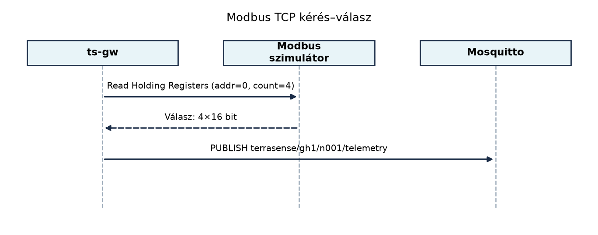
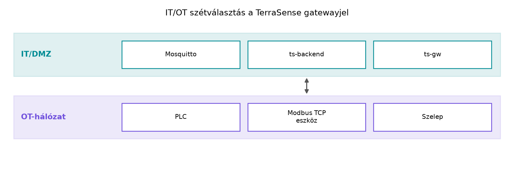

A TerraSense üvegházban a levegő hőmérsékletét, páratartalmát és a
talajnedvességet nemcsak a saját Zephyr-alapú ts-node
eszköz méri, hanem gyakran meglévő ipari berendezések, például PLC-k,
klímavezérlők vagy öntözőszivattyú-vezérlők is előállítják. Az ilyen
eszközök többsége a Modbus protokollt beszéli, amely egyszerű
regiszteralapú adatcserét kínál. Nagyobb telephelyeken pedig egyre
gyakoribb az OPC UA, amely gazdag információs modelljével egységes képet
ad a teljes gyártási vagy épületautomatizálási rendszerről. A
ts-gw gateway feladata az lesz, hogy ezekből az ipari
adatforrásokból adatot nyerjen ki, és azt a TerraSense MQTT
topic-konvenciója szerint továbbítsa a broker felé. Ebben az
alfejezetben a Modbus és az OPC UA alapjait tanuljuk meg, majd egy
Modbus TCP-szimulátorból olvasunk ki regisztereket. A kapott
adatforrás-kódot a későbbi gateway-implementáció használja fel.
Definíció. A Modbus egy alkalmazási szintű üzenetprotokoll, amely mester–szolga (master–slave) viszonyt valósít meg. A mester – tipikusan egy PLC, számítógép vagy gateway – kezdeményezi a kérést, a szolga pedig válaszol. A szolga adatmodellje címzett 1 bites és 16 bites regiszterekből áll.
A klasszikus elnevezés master/slave, de Modbus TCP esetén gyakran kliens/szerver párt mondunk: a TCP-kliens a mester, a TCP-szerver a szolga. A protokoll ugyanaz, csak a szállítási réteg változik.
A Modbus négy alapvető adattípust különböztet meg:
| Adattípus | Méret | Irány a mester felől | Tipikus funkciók |
|---|---|---|---|
| Coil (kapcsoló kimenet) | 1 bit | olvasható/írható | FC01, FC05, FC15 |
| Discrete input (diszkrét bemenet) | 1 bit | csak olvasható | FC02 |
| Input register (bemeneti regiszter) | 16 bit | csak olvasható | FC04 |
| Holding register (tartóregiszter) | 16 bit | olvasható/írható | FC03, FC06, FC16 |
A gyakorlatban a mérési értékeket általában holding registerekben vagy input registerekben tárolják. A függvénykód (function code, FC) mondja meg, hogy milyen műveletet kér a mester. Például az FC03 Read Holding Registers egy kezdőcímet és darabszámot kap, a szolga pedig a regiszterek értékét adja vissza. Az FC16 Write Multiple Registers egyszerre több regisztert ír.

A Modbus regiszter 16 bites, a bájtsorrend a protokollban big-endian: a magasabb helyiértékű bájt érkezik előbb. A probléma akkor jelentkezik, ha egy 32 bites értéket – például egy lebegőpontos hőmérsékletet – két regiszterben tárolnak. A Modbus specifikáció nem rögzíti a regiszterek sorrendjét, ezért a gyártói konvenciók eltérhetnek: az egyik eszköz high word first (a kisebb című regiszter tartalmazza a felső 16 bitet), a másik low word first sorrendet használ. Ezt a regisztertérképet olvasva mindig ellenőrizni kell, és szükség esetén meg kell cserélni a két regisztert.
Definíció. Az OPC UA platformfüggetlen, szolgáltatásorientált adatcsere- és információs modell. A szerver címtérben tárolja az elérhető adatokat; a címtér csomópontokból (Node) áll, amelyek attribútumokkal és referenciákkal írják le az objektumokat, változókat és metódusokat.
Minden csomópontot egyedi azonosítóval, a NodeId-val azonosítunk. A
NodeId egy névtér-indexet (namespace) és egy azonosítót tartalmaz,
például ns=2;s=Temperature vagy ns=2;i=1001. A
címtér hierarchikus: a csomópontokra referenciák mutatnak, így lehet
bejárni a gépek, szenzorok és azok paramétereinek faszerkezetét. Egy
csomópont attribútumai között van például a megjelenítendő név, az
adattípus, a hozzáférési szint és a tényleges érték.
Az OPC UA szolgáltatások közé tartozik a Read (érték kiolvasása), a
Write (írás), a Browse (címtér bejárása), a Subscription/ Monitoring
(értesítés értékváltozáskor) és a Call (távoli metódus hívása). A
biztonsági módok három szintje: None (csak zárt, fizikailag
védett hálózaton), Sign (az üzenetek aláírtak, de nem
titkosítottak) és SignAndEncrypt (aláírt és titkosított). A
biztonságos üzemhez X.509 tanúsítványokat használnak, így a kliens és a
szerver kölcsönösen azonosítja magát.
Az OPC UA klasszikus kliens–szerver modellje mellett a szabvány 1.04-es verziójától létezik Pub/Sub üzemmód is. Ebben a modellben a Publisher a beállított adatkészleteket üzenetekben teszi közzé, a Subscriberek pedig ezeket fogadják. A szállítási réteg lehet például UDP, AMQP vagy MQTT. MQTT esetén az OPC UA JSON-kódolású hálózati üzeneteket publikál egy topicra, és a fogadó oldalon az OPC UA alkalmazás visszaállítja az információs modellt. Az MQTT-transzport tűzfalbarát és jól illeszkedik a TerraSense brokeréhez. Hátránya, hogy a QoS-t, a munkamenet-tartást és a retenciót az MQTT-tulajdonságok biztosítják, ezért az OPC UA Pub/Sub rendszerben is pontosan kell beállítani a topicokat és a minőségi paramétereket.
Az üzemi hálózat (Operational Technology, OT) és az irodai, illetve
felhőalapú hálózat (Information Technology, IT) szétválasztása alapvető
ipari védelmi elv. A Modbus sem hitelesítést, sem titkosítást nem
tartalmaz, ezért csak zárt, védett OT-hálózatban szabad használni. Az
OPC UA már kínál biztonsági réteget, de a None módot csak
lokálisan, a védett szegmensben szabad engedélyezni. A
ts-gw a DMZ-ben helyezkedik el: az OT-hálózat felé
kliensként olvassa a PLC-ket, az IT-hálózat felé pedig kifelé irányuló,
mTLS-alapú MQTT-kapcsolatot nyit. Így az OT-hálózatnak nincs közvetlen
internetelérése.

A három protokoll közötti választás elsősorban a modellezési igénytől, a rendelkezésre álló erőforrásoktól és az integrációs környezettől függ.
| Szempont | Modbus | OPC UA | MQTT |
|---|---|---|---|
| Modell | lapos regisztercímek | gazdag, szemantikus címtér | topic-hierarchia, szabad séma |
| Erőforrásigény | nagyon alacsony | közepes–magas | alacsony–közepes |
| Biztonság | nincs a protokollban | X.509, aláírás, titkosítás | TLS/mTLS a szállítás alatt |
| Üzenetminta | kérés–válasz | kérés–válasz, subscription | publish/subscribe |
| Tipikus hely | PLC-k, kis szenzorok, régi eszközök | gépek, cellák, MES-ek | felhőintegráció, eszköz–backend |
A TerraSense-ben a ts-node közvetlenül MQTT-t használ,
mert energiatakarékos és a brokerrel szemben kérés nélkül is közzétehet.
A meglévő PLC-ket viszont Modbus-on kell lekérdezni, ezért a gateway egy
Modbus TCP-kliens komponenst kap. Ha a telephely egyszer már OPC UA-ban
szabványosított, akkor a gateway OPC UA-kliensként olvashat, és az így
kapott modellt leképezi MQTT-re.
Tegyük fel, hogy a szimulált PLC a következő holding registereket szolgáltatja a 0. címtől kezdve:
| Cím | Regiszter | jelentés | méretezés |
|---|---|---|---|
| 0 | HR0 | hőmérséklet | 0,1 °C egység (value / 10) |
| 1 | HR1 | relatív páratartalom | 0,1 % egység (value / 10) |
| 2–3 | HR2, HR3 | talajnedvesség | 32 bites IEEE 754 float, high word first |
A szimulátor a következő nyers értékeket adja: HR0=234, HR1=650, HR2=0x41A0, HR3=0x0000. A dekódolás lépései:
Ez a példa mutatja, miért kell a gyártói regisztertérképet és a szó-sorrendet pontosan ismerni.
Munkakönyvtár: hozd létre és lépj be:
mkdir -p ~/iot-labor/i031 && cd ~/iot-labor/i031A telemetria-séma ebben a laborban még csak a kimeneti JSON-szinten
jelenik meg; a végleges sémát az Adatformátumok:
JSON, CBOR, Protocol Buffers, SenML alfejezet rögzíti. A laborban a
ts-gw gatewayt egy Python-prototípussal helyettesítjük,
amely kiolvassa a Modbus-regisztereket, és az eredményt JSON-ként írja
ki.
Először a közös ~/iot-labor/stack/compose.yaml fájlba
vegyünk fel egy modbus-sim szolgáltatást. A pontos
képverzió ellenőrzést igényel; az alábbi konfiguráció Python 3.12-es
base image-t használ, és a pymodbus csomagot telepíti:
services:
modbus-sim:
image: python:3.12-slim
container_name: lab-modbus-sim
ports:
- "1502:502"
volumes:
- ./i031:/app:ro
command: sh -c "pip install pymodbus && python /app/simulator.py"Hozd létre a ~/iot-labor/i031/simulator.py fájlt:
from pymodbus.server import StartTcpServer
from pymodbus.datastore import ModbusSlaveContext, ModbusServerContext
from pymodbus.datastore import ModbusSequentialDataBlock
store = ModbusSlaveContext(
di=ModbusSequentialDataBlock(0, [0] * 10),
co=ModbusSequentialDataBlock(0, [0] * 10),
hr=ModbusSequentialDataBlock(0, [234, 650, 0x41A0, 0x0000]),
ir=ModbusSequentialDataBlock(0, [0] * 10),
)
context = ModbusServerContext(slaves=store, single=True)
print("Modbus TCP szimulátor a 0.0.0.0:502 porton...")
StartTcpServer(context=context, address=("0.0.0.0", 502))Indítsd el a szimulátort a stack könyvtárából:
cd ~/iot-labor/stack && docker compose up -d modbus-simA kliens a hoston fut. Telepítsd a pymodbus csomagot egy
virtuális környezetbe, majd hozd létre a
~/iot-labor/i031/modbus_client.py fájlt:
import struct
from pymodbus.client import ModbusTcpClient
client = ModbusTcpClient("127.0.0.1", port=1502)
client.connect()
rr = client.read_holding_registers(address=0, count=4, slave=1)
if rr.isError():
print(f"Modbus hiba: {rr}")
else:
temp = rr.registers[0] / 10.0
hum = rr.registers[1] / 10.0
raw_float = struct.pack(">HH", rr.registers[2], rr.registers[3])
soil = struct.unpack(">f", raw_float)[0]
result = {
"node_id": "n001",
"ts": None,
"seq": 0,
"temperature_c": temp,
"humidity_rh": hum,
"soil_moisture_pct": soil,
}
print(result)
client.close()Futtatás:
cd ~/iot-labor/i031
python3 -m venv venv
venv/bin/pip install pymodbus
venv/bin/python modbus_client.pyVárt kimenet (a ts és seq most még semleges
érték):
{'node_id': 'n001', 'ts': None, 'seq': 0, 'temperature_c': 23.4, 'humidity_rh': 65.0, 'soil_moisture_pct': 20.0}A labor takarítása a konténer leállítása és a hálózat eltávolítása, de a létrehozott szkriptek a későbbi felhasználáshoz megmaradhatnak:
cd ~/iot-labor/stack && docker compose stop modbus-sim && docker compose rm -f modbus-simTovábbvitt eredmény. A modbus_client.py
által előállított JSON-szerkezet – node_id,
ts, seq, valamint a mértékegység-azonosító
kulcsok, mint temperature_c, humidity_rh,
soil_moisture_pct – a gateway felőli ipari adatforrás
prototípusa. A A ts-gw szolgáltatás C++-ban:
protokollfordítás MQTT-re alfejezet ezt a mintát valósítja meg
C++17-ben, és köti össze a TerraSense
terrasense/gh1/n001/telemetry topicjával.
A Modbus-kliens működését legegyszerűbben a dekódolt értékekkel
ellenőrizzük. Ha a kimenet 23,4 °C, 65,0 %RH és 20,0 % talajnedvesség,
akkor a regiszterek címe és a szó-sorrend helyes. A regisztertérkép
érvényességét a szimulátor hr blokkjának módosításával is
tesztelhetjük.
| Tünet | Ok | Javítás |
|---|---|---|
| A kliens nem csatlakozik | a szimulátor nem fut, vagy a port mapping hibás | docker compose ps ellenőrzés; a host-port 1502,
konténer 502 |
Modbus Error vagy timeout |
a slave ID nem egyezik, vagy a cím érvénytelen | a slave=1 és az address=0 ellenőrzése |
| A hőmérséklet 2340 °C-nak látszik | a méretezést (÷10) elfelejtetted | használd a / 10.0 osztást |
| A talajnedvesség közel nulla | a két regiszter szó-sorrendje fel van cserélve | a struct.pack(">HH", ...) big-endian sorrend
megtartása |
32 bites érték regiszter-sorrendjének felcserélése. A Modbus csak 16 bites regisztereket szállít, a gyártói dokumentációk pedig gyakran nem írják egyértelműen, hogy a kisebb című regiszter a felső vagy az alsó 16 bitet tartalmazza. A téves sorrend nem mindig azonnal látszik, mert az érték formailag érvényes float, de teljesen hibás. Mindig egy ismert értékkel (például a szimulátor 20,0-es értékével) kell ellenőrizni a dekódolást.
Modbus TCP-nél a slave ID elhagyása. Sok fejlesztő
azt gondolja, hogy TCP/IP esetén a slave ID felesleges, pedig a Modbus
TCP átvitelben a Unit Identifier mező ugyanúgy jelen van. Ha a szerver
több szolga-címet szolgál ki, vagy a gyártói implementáció megköveteli,
a slave=1 elhagyása hibás választ vagy timeoutot okoz.
terrasense/<site>/<node>/telemetry
sémához?address=0). A felbontás
0,01 °C, tehát a nyers értéket 100-zal kell osztani.hr blokkjában a 4. regiszter legyen
valve érték, például
[234, 650, 0x41A0, 0x0000, 1]. A kliens
read_holding_registers(address=0, count=5, slave=1) hívása
után a
valve_state = "open" if rr.registers[4] == 1 else "closed"
mező kerül a JSON-ba.ts-gw gatewayre van szükség, amely feliratkozik a Publisher
topicjára, az üzenetet normalizálja, és a
terrasense/<site>/<node>/telemetry topicra
publikál tovább. Így az ipari forrás belső topic-elrendezése nem
szivárog be a backendbe, és a gateway egységes sémát biztosít.A Modbus egy egyszerű, regiszteralapú master–slave protokoll, amely 1
bites coilokat és 16 bites regisztereket használ. A regisztertérkép és a
függvénykódok ismerete nélkülözhetetlen a helyes dekódoláshoz, különösen
32 bites értékeknél a szó-sorrend megállapításához. Az OPC UA gazdag,
node-alapú címteret, szolgáltatásokat és erős biztonsági módokat kínál,
Pub/Sub üzemmódja pedig MQTT-vel is összekapcsolható. Az IT/OT
szétválasztás alapelv: a Modbus és az OPC UA az OT-hálózaton fut, a
DMZ-ben lévő gateway fordítja le az adatokat MQTT-re. Továbbvitt
eredmény: a ~/iot-labor/i031/modbus_client.py
kimeneti JSON-szerkezete (node_id, ts,
seq, mértékegység-azonosító mezők) és a
modbus-sim compose-szolgáltatás a A
ts-gw szolgáltatás C++-ban: protokollfordítás MQTT-re alfejezet
ipari adatforrás-mintája.
https://docs.oasis-open.org/mqtt/mqtt/v5.0/mqtt-v5.0.html.python:3.12-slim képváltozat és a
pymodbus aktuális verziója ellenőrzést igényel; a fenti kód
a pymodbus 3-as főverziójának API-ját feltételezi. A
konténer-alapú szimulátor pontos viselkedését és a compose-szolgáltatás
paramétereit a helyi környezetben ellenőrizni kell.